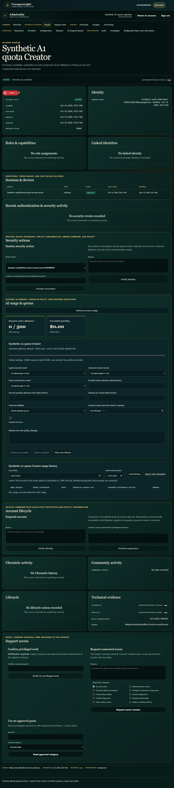
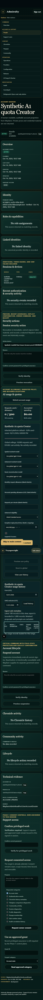
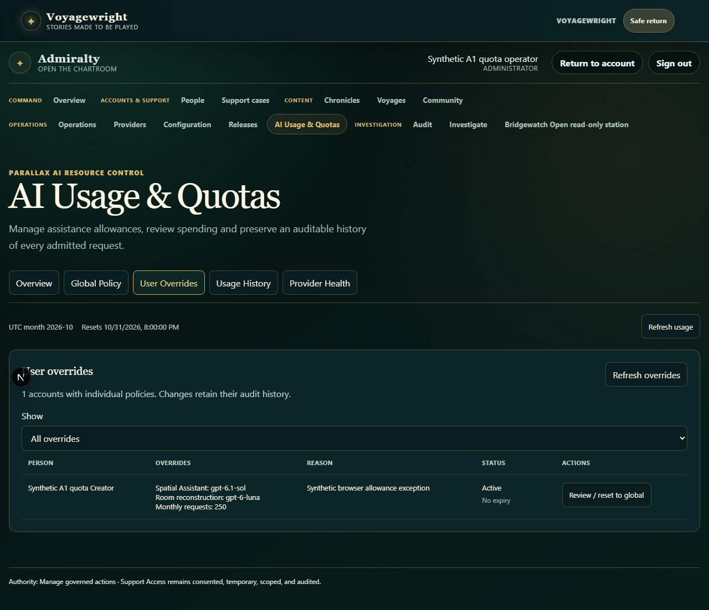
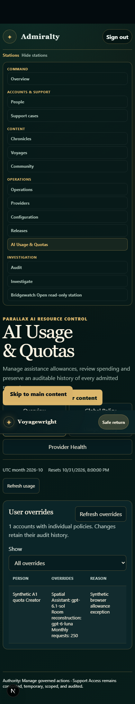
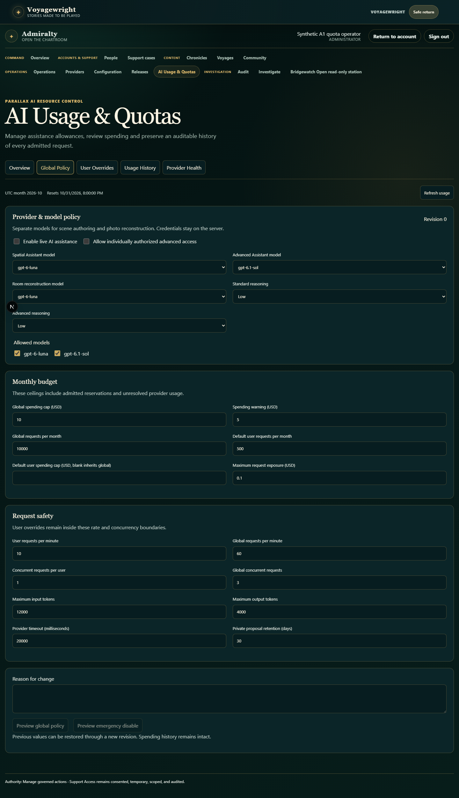
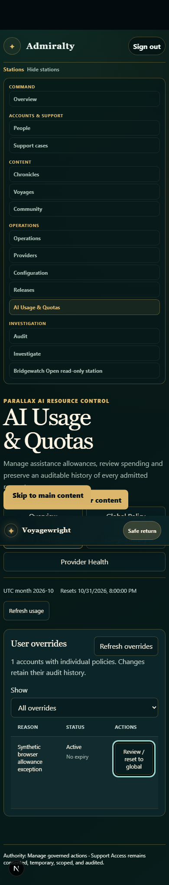

Admiralty models & user overrides
Actual authenticated application · synthetic accounts · source 9225698ef70e · seven unpaid browser journeys passed
Separate global models, models and quotas inside the existing People dossier, reason-bearing exception inventory, narrow keyboard access, and reviewed reset to global.
people ai dossier desktop

people ai dossier mobile

ai overrides desktop

ai overrides phone

ai model policy desktop

ai overrides phone actions

photo parallax ai quotas Admiral a2051 the existing People dossier chromium video 1
photo parallax ai quotas Admiral a2051 the existing People dossier chromium video 2
photo parallax ai quotas Admiral a2051 the existing People dossier chromium video
Development evidence. No owner room reconstruction, physical accuracy or whole-project acceptance claim.